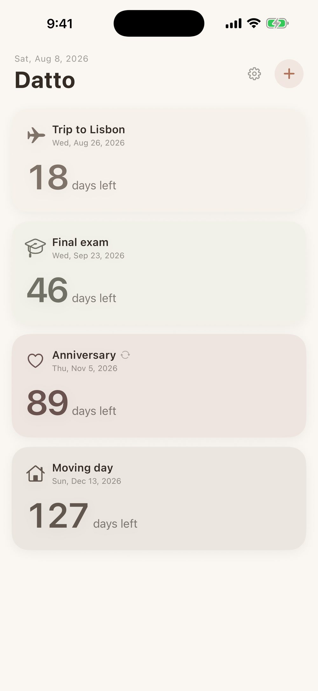

Afficher un compte à rebours jusqu’à un anniversaire sur l’écran d’accueil de l’iPhone
Placez les jours restants avant un anniversaire, une date importante ou un voyage sur votre écran d’accueil : plus besoin de compter, vous les voyez chaque fois que vous déverrouillez votre téléphone.
Voici comment faire avec Datto, une app de compte à rebours pour iPhone. Un widget et trois événements sont gratuits.
1. Ajouter la date
Ouvrez Datto et touchez +.
Saisissez le Nom de l’événement et la Date, puis touchez Enregistrer.
Ou laissez Datto le remplir :
« Choisir dans les contacts » — choisissez un anniversaire enregistré dans vos contacts.
« Choisir dans le calendrier » — choisissez un événement des douze prochains mois dans votre calendrier.
Seuls le nom et la date sont copiés. Rien de vos contacts ni de votre calendrier ne quitte votre iPhone.

2. L’ajouter à l’écran d’accueil
Maintenez le doigt sur un espace vide de votre écran d’accueil.
Touchez + (Modifier) en haut à gauche et recherchez « Datto ».
Choisissez la taille Petit et touchez Ajouter le widget.
Pour choisir le jour affiché, maintenez le doigt sur le widget, touchez Modifier le widget, puis choisissez l’événement.
3. Répéter les anniversaires chaque année (Pro)
Avec Datto Pro, réglez Répéter sur « Chaque année ». Une fois le jour passé, le compte à rebours passe tout seul à l’année suivante, sans modifier la date. « Chaque mois » fonctionne aussi.
Datto Pro est un achat unique, pas un abonnement. Il ajoute aussi les événements et widgets illimités, les widgets moyens, grands et d’écran verrouillé, et des rappels discrets d’étapes (100 jours avant, la veille, le jour même, sans son).
Questions
Que puis-je faire gratuitement ?Jusqu’à trois événements, et un petit widget d’écran d’accueil qui en affiche un. Sans publicité ni compte. Datto Pro, un achat unique, ajoute les événements et widgets illimités, les widgets moyens, grands et d’écran verrouillé, et les événements récurrents.
Mes contacts ou mon calendrier sont-ils envoyés quelque part ?Non. Seuls le nom et la date sont copiés dans Datto, et rien de vos contacts ni de votre calendrier ne quitte votre iPhone.
Un anniversaire peut-il être décompté à nouveau chaque année ?Oui, avec Datto Pro : réglez Répéter sur « Chaque année » et le compte à rebours passe tout seul à l’année suivante.
Comment changer le jour affiché par le widget ?Maintenez le doigt sur le widget, touchez Modifier le widget et choisissez l’événement.